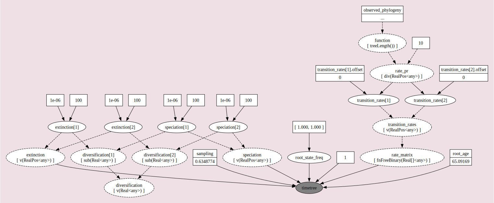

BiSSE and MuSSE are powerful approaches for testing the association of a character with diversification
rate heterogeneity. However, BiSSE has been shown to be prone to falsely identifying a positive association
when diversification rate shifts are correlated with a character not included in the model
(Maddison and FitzJohn 2015; Rabosky and Goldberg 2015). One approach to reduce the possibility of falsely associating
a character with diversification rate heterogeneity is to incorporate a second, unobserved character into the
model (i.e., a Hidden State-Dependent Speciation and Extinction (HiSSE) model; see for example Beaulieu and O’Meara (2016)).
The changes in the unobserved character’s state represent background diversification rate changes
that are not correlated with the oberved character. See for a schematic overview of the HiSSE
model, and Table 2 for an explanation of the HiSSE model parameters. Now let’s set up and run a HiSSE
analysis in RevBayes.
A schematic overview of the HiSSE model. Each lineage has an observed binary state associated to it:
state 0 (blue) or state 1 (red). Furthermore, there is a second, unobserved (hidden), binary character with states A
or B. The HiSSE model describes jointly the evolution of both of these two characters; a lineage must be in one of
four different states: 0A, 0B, 1A, or 1B. We estimate separate speciation and extinction rates for each of these four
states. Note that just like BiSSE can easily be extended to MuSSE, RevBayes allows you to extend HiSSE models
beyond binary observed and unobserved characters.
Estimating State-Dependent Speciation and Extinction under the HiSSE Model
First, we create some global variables to set-up our analysis.
Using this variable we can easily change our script to use a different character with a different number
of states. We will also use this variable in our second example on hidden-state speciation and extinction
model.
For the HiSSE model, we need to expand our characters to the new state space.
This means, that originally we had the states 0 and 1.
Now, we want to have the states 0A, 0B, 0C, 0D and 1A, 1B, 1C, 1D.
A character that was originally in state 0 will now be ambiguous for all states 0A, 0B, 0C and 0D.
Instead of coding this up manually, RevBayes provides a simple function for you.
data_exp <- data.expandCharacters( NUM_HIDDEN )
Finally, we initialize a variable for our vector of moves and monitors.
moves = VectorMoves()
monitors = VectorMonitors()
Specify the Model
Priors on the Rates
We start by specifying prior distributions on the diversification rates.
Here, we will assume an identical prior distribution on each of the
speciation and extinction rates. Furthermore, we will use a log-uniform
distribution as the prior distribution on each speciation and
extinction rate (i.e., a uniform distribution on the log of the rates).
For example, we have $\lambda_{0A} = \lambda_{\text{observed},0} * \lambda_{\text{hidden},A}$
Let’s code this up in RevBayes.
First, we create the vector of hidden speciation rates.
Following the idea of discretizing a continuous distribution of diversification rates
(see Branch-Specific Diversification Rate Estimation), we will specify NUM_HIDDEN speciation rates
as the quantiles of a lognormal distribution.
We need the average rate of the hidden speciation rates to be fixed, because otherwise the model is not identifiable.
Therefore, we fix the median of the lognormal distribution to 1.0:
ln_speciation_hidden_mean <- ln(1.0)
Next, we draw the standard deviation of the hidden speciation rates from an exponential distribution with mean H
(so that we expect the 95% interval of the hidden speciation rate to span 1 order of magnitude).
With the mean and the standard deviation we can specify the distribution on the hidden speciation rates.
We create a deterministic variable for the hidden speciation rate categories using
a discretized lognormal distribution (the N-quantiles of it).
For the observed speciation and extinction rates, we will apply a different approach.
We will draw the speciation and extinction rates for the observed characters from identical distribution,
so that a priori we expect with probability 0.5 that $\lambda_{\text{observed},0} > \lambda_{\text{observed},1}$,
and with probability 0.5 we expect $\lambda_{\text{observed},1} > \lambda_{\text{observed},0}$.
For the lack of prior knowledge, we specify a log-uniform prior distribution on the speciation and extinction rates
for the observed characters.
Note that we also initialize the starting states to make the analysis run more efficiently.
for (i in 1:NUM_STATES) {
### Create a loguniform distributed variable for the speciation rate
speciation_observed[i] ~ dnLoguniform( 1E-6, 1E2)
speciation_observed[i].setValue( (NUM_TOTAL_SPECIES-2) / tree_length )
moves.append( mvScale(speciation_observed[i],lambda=1.0,tune=true,weight=3.0) )
### Create a loguniform distributed variable for the speciation rate
extinction_observed[i] ~ dnLoguniform( 1E-6, 1E2)
extinction_observed[i].setValue( speciation_observed[i] / 10.0 )
moves.append( mvScale(extinction_observed[i],lambda=1.0,tune=true,weight=3.0) )
}
We have now specified the diversification rate variables for the observed and hidden states.
That means, we can now put these two put together.
for (j in 1:NUM_HIDDEN) {
for (i in 1:NUM_STATES) {
index = i+(j*NUM_STATES)-NUM_STATES
speciation[index] := speciation_observed[i] * speciation_hidden[j]
extinction[index] := extinction_observed[i] * extinction_hidden[j]
}
}
Now we can specify our character-specific speciation and extinction rate
parameters. Because we will use the same prior for each rate, it’s easy
to specify them all in a for-loop. We will use a log-uniform distribution as a prior
on the speciation and extinction rates. The loop also allows us to apply moves to each
of the rates we are estimating and create a vector of deterministic nodes
representing the rate of diversification ($\lambda - \mu$) associated with each
character state.
The stochastic nodes representing the vector of speciation rates and vector of
extinction rates have been instantiated. The software assumes that the rate in position [1] of each
vector corresponds to the rate associated with diurnal 0 lineages and the rate
at position [2] of each vector is the rate associated with nocturnal 1 lineages.
Next we specify the transition rates between the states 0 and 1:
$q_{01}$ and $q_{10}$. As a prior, we choose that each transition rate
is drawn from an exponential distribution with a mean of 10 character
state transitions over the entire tree. This is reasonable because we
use this kind of model for traits that transition not-infrequently, and
it leaves a fair bit of uncertainty.
Note that we will actually use a for-loop to instantiate the transition rates
so that our script will also work for non-binary characters.
#########################################################
# Set up the transition rate matrix for observed states #
#########################################################
# Each transition rate between observed states are drawn
# from an exponential distribution with a mean of 10
# character state transitions over the tree.
rate_pr := observed_phylogeny.treeLength() / 10
for ( i in 1:(NUM_STATES*(NUM_STATES-1)) ) {
transition_rates[i] ~ dnExp(rate_pr)
moves.append( mvScale(transition_rates[i],lambda=0.50,tune=true,weight=3.0) )
}
#########################################################
# Set up the transition rate matrix for hidden states #
#########################################################
# We assume the transitions among the hidden states
# are all equal and drawn from an exponential distriubtion.
hidden_rate ~ dnExponential(rate_pr)
moves.append( mvScale(hidden_rate,lambda=0.5,tune=true,weight=5) )
for (i in 1:(NUM_HIDDEN * (NUM_HIDDEN - 1))) {
R[i] := hidden_rate
}
rate_matrix := fnHiddenStateRateMatrix(transition_rates, R, rescaled=false)
Here, rate[1] is the rate of transition from state 0 (diurnal) to state 1 (nocturnal),
and rate[2] is the rate of going from nocturnal to diurnal.
Finally, we put the rates into a matrix, because this is what’s needed
by the function for the state-dependent birth-death process.
Note that we do not “rescale” the rate matrix. Rate matrices for
molecular evolution are rescaled to have an average rate of 1.0, but for
this model we want estimates of the transition rates with the same time
scale as the diversification rates.
Prior on the Root State
Create a variable for the root state frequencies. We are using a flat Dirichlet distribution as the prior on
each state. There has been some discussion about this in (FitzJohn et al. 2009).
You could also fix the prior probabilities for the root states to be equal
(generally not recommended), or use empirical state frequencies.
Note that we use the rep() function which generates a vector of length NUM_STATES
with each position in the vector set to 1. Using this function and the NUM_STATES
variable allows us to easily use this Rev script as a template for a different analysis
using a character with more than two states.
We will use a special move for objects that are drawn from a Dirichlet distribution:
All birth-death processes are conditioned on the probability a taxon is sampled in the present.
We can get an approximation for this parameter by calculating the proportion of sampled
species in our analysis.
We know that we have sampled 233 out of 367 living described primate species. To
account for this we can set the sampling probability as a constant node
with a value of 233/367.
rho <- observed_phylogeny.ntips()/367
Root Age
The birth-death process also depends on time to the most-recent-common ancestor–i.e.,
the root. In this
exercise we use a fixed tree and thus we know the age of the tree.
root <- observed_phylogeny.rootAge()
The Time Tree
Now we have all of the parameters we need to specify the full character
state-dependent birth-death model. We initialize the stochastic node
representing the time tree and we create this node using the dnCDBDP() function.
Now, we will fix the BiSSE time-tree to the observed values from our data files. We use
the standard .clamp() method to give the observed tree and branch times:
And then we use the .clampCharData() to set the observed states at the tips of the tree:
timetree.clampCharData( data )
Finally, we create a workspace object of our whole model. The model()
function traverses all of the connections and finds all of the nodes we
specified.
mymodel = model(timetree)
You can use the .graph() method of the model object to visualize the graphical model you
have just constructed . This function writes the model DAG to a file
that can be viewed using the program Graphviz ().

The probabilistic graphical model of the character-state-dependent diversification model.
This image was generated by executing the mymodel.graph("bisse.dot") in RevBayes after specifying the full model DAG.
Then, the resulting file can be opened in the program Graphviz.
Running an MCMC analysis
Specifying Monitors
For our MCMC analysis, we set up a vector of monitors to record the
states of our Markov chain. The first monitor will model all numerical
variables; we are particularly interested in the rates of speciation,
extinction, and transition.
Optionally, we can sample ancestral states during the MCMC analysis.
We need to add an additional monitor to record the state of each internal node in the tree.
The file produced by this monitor can be summarized so that we can visualize the estimates of ancestral states.
With a fully specified model, a set of monitors, and a set of moves, we
can now set up the MCMC algorithm that will sample parameter values in
proportion to their posterior probability. The mcmc() function will
create our MCMC object:
If we sampled ancestral states during the MCMC analysis, we can use the RevGadgets R package
to plot the ancestral state reconstruction. First, though, we must summarize the sampled values in
RevBayes.
To do this, we first have to read in the ancestral state log file. This uses a specific function called readAncestralStateTrace().
burnin=25
n_time_slices = 500
# read in the sampled character histories
anc_states = readAncestralStateTrace("output/stoch_char_map_primates_HiSSE.log")
summarizeCharacterMaps(anc_states, observed_phylogeny, file="output/events.tsv", burnin=0.1)
Now, we can write an annotated tree to a file. This function will write a tree with each
node labeled with the maximum a posteriori (MAP) state and the posterior probabilities for each
state.
A visualization of the ancestral states estimated under the BiSSE model.
Summarizing Parameter Estimates
Our MCMC analysis generated a tab-delimited file called primates_activTime_BiSSE_mcmc.log that contains
the samples of all the numerical parameters in our model. There are a lot of tools available
for visualizing files like this (like R or python), which allow you to generate plots and
visually explore the posterior distributions of sampled parameters.
Check the Trace view for each parameter. Did the chain “mix” effectively?
Highlight both of the speciation rates: speciation[1] and speciation[2] to
compare the Estimates of both parameters.
Write down the mean value for the rate of speciation associated with
diurnal lineages speciation[1] and the rate of speciation associated with
nocturnal lineages speciation[2].
Now use the Marginal Prob Distribution view to compare the marginal posterior densities
of both speciation rates.
Beaulieu J.M., O’Meara B.C. 2016. Detecting hidden diversification shifts in models of trait-dependent speciation and extinction. Systematic Biology. 65:583–601.10.1093/sysbio/syw022
FitzJohn R.G., Maddison W.P., Otto S.P. 2009. Estimating trait-dependent speciation and extinction rates from incompletely resolved phylogenies. Systematic Biology. 58:595–611.10.1093/sysbio/syp067
Maddison W.P., FitzJohn R.G. 2015. The Unsolved Challenge to Phylogenetic Correlation Tests for Categorical Characters. Systematic Biology. 64:127–136.10.1093/sysbio/syu070
Rabosky D.L., Goldberg E.E. 2015. Model inadequacy and mistaken inferences of trait-dependent speciation. Systematic Biology. 64:340–355.10.1093/sysbio/syu131
Yu G., Smith D.K., Zhu H., Guan Y., Lam T.T.-Y. 2017. ggtree: an R package for visualization and annotation of phylogenetic trees with their covariates and other associated data. Methods in Ecology and Evolution. 8:28–36.